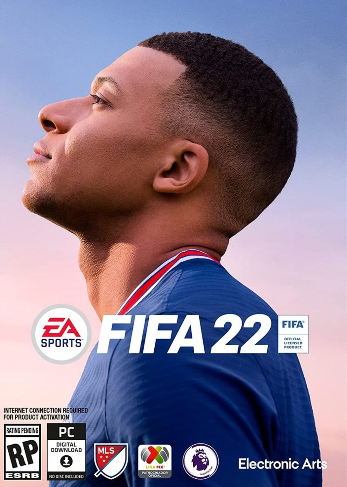

FIFA 22
FIFA 22는 2021년 10월 1일에 출시한 축구를 소재로 한 비디오 게임으로 EA 스포츠의 FIFA 시리즈 29번째 정규작이다.
감독 커리어 모드에서 유저가 기존 구단 외에 구단을 직접 만들고, 유니폼과 팀 로고부터 선수 구성과 보드진 목표 등을 설정할 수 있게 된다.
선수 커리어 모드에선 드디어 교체 출전이 가능해진다. 시리즈 역사 27년만에 여성 해설자로 아스날 여자 축구팀의 레전드인 Alex Scott이 나온다.
게임에 들어간 리그와 팀을 공개했는데 그나마 구색이라도 갖추던 국가대표팀 수가 대폭 삭제되었다. 유럽은 터키, 스위스, 불가리아가 삭제되고 우크라이나가 추가됐으며, 남미는 브라질, 아르헨티나를 제외한 나머지 국가가 전부 삭제, 아시아는 인도 삭제, 아프리카는 기존에 있던 팀이 전부 삭제되어 총 33개국만 등장한다.
